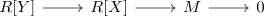
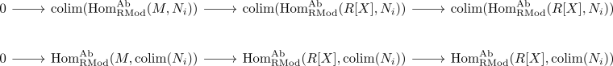
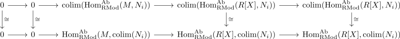

covariant hom from a finitely presented Module preserves filtered colimits
Proposition
Let \(R\) be a ring and $\mathrm{RMod}$ the category RMod, $M$ a finitely presented module and $\mathrm{Hom}^{\mathrm{Ab}}_{\mathrm{RMod}}(M,-)$ the covariant ab-hom functor Then $\mathrm{Hom}^{\mathrm{Ab}}_{\mathrm{RMod}}(M,-)$ preserves filtered colimits.
Proof
Choose a finite presentation

As the contravariant ab-hom functor is a left exact functor and RMod as Ab5 category we get short exact sequences

Furthermore the induced morphism between colimits and functor make the diagram commute

where especially the last two morphisms are isomorphism (cf. covariant hom functor for a finite product of modules preserves colimits)
Hence by Five-Lemma the induced map
\begin{align*}
\varphi: \mathrm{colim}(\mathrm{Hom}^{\mathrm{Ab}}_{\mathrm{RMod}}(M,N_i)) \rightarrow \mathrm{Hom}^{\mathrm{Ab}}_{\mathrm{RMod}}(M,\mathrm{colim}(N_i))
\end{align*}
is an isomorphism